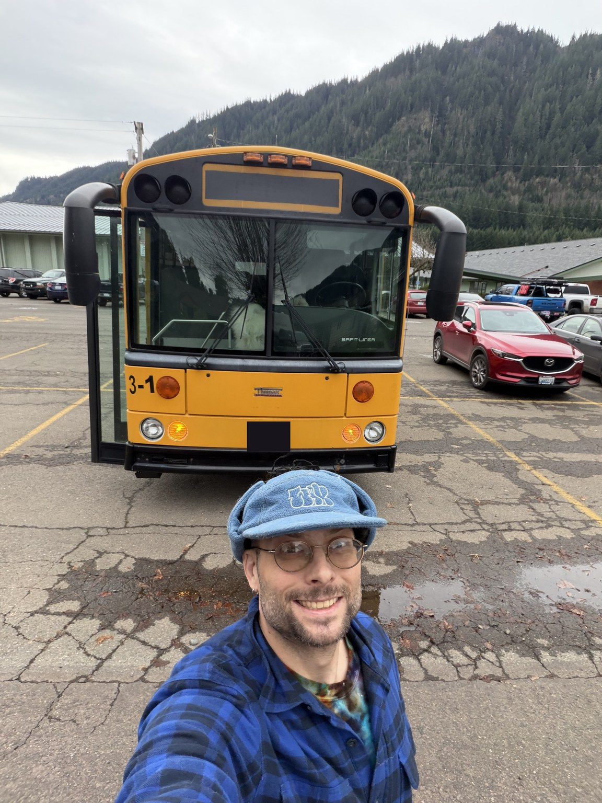
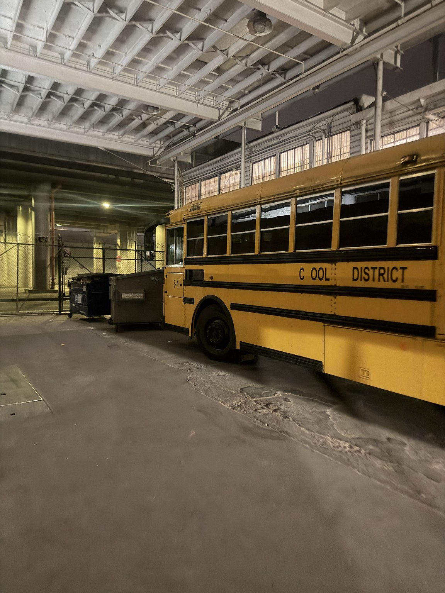
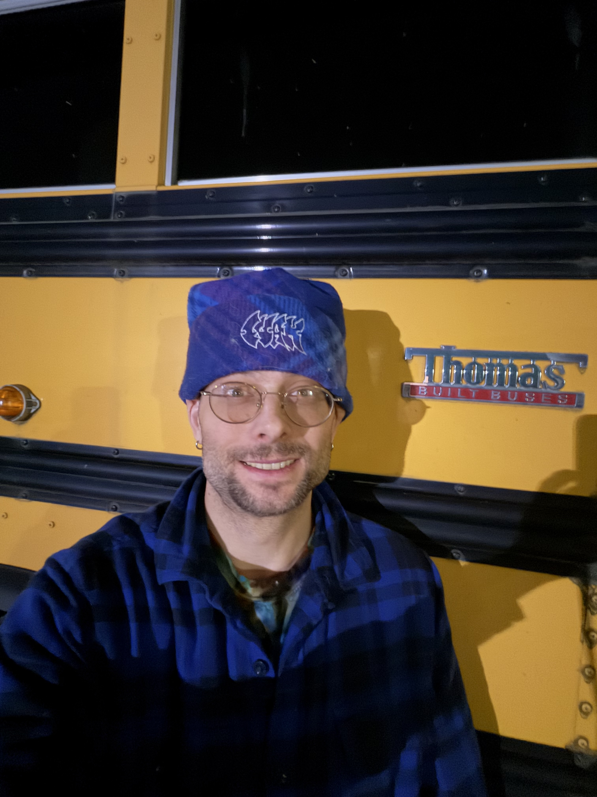

Milestone 001 · Donor vehicle acquisition
Earl Day

Today I brought Earl home.
He drives like a beauty. I took it easy, learned his brakes, navigated some winding roads, and whenever I needed a little extra power to get up a hill, he had me.
I’m increasingly confident that Earl can make the journey to Black Rock City.
Our plan is to build BAAABS in Seattle, prove out the design, take her apart, and bring her to the playa. I’m already impressed by how much storage Earl affords us. With some creative origami, we might even be able to carry most of BAAABS inside Earl himself.
Today, a dream became something I could actually climb inside, start up, and drive home.
Happy Earl Day to all who celebrate!

